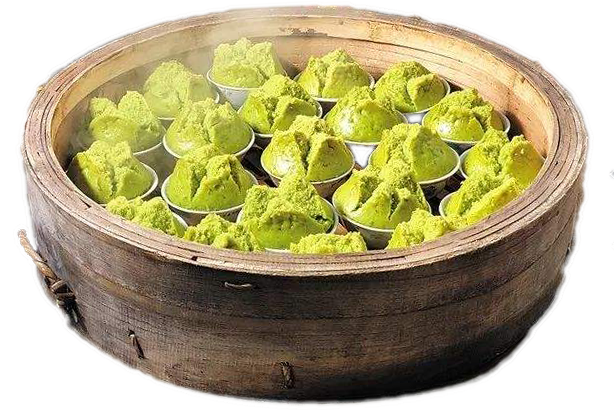
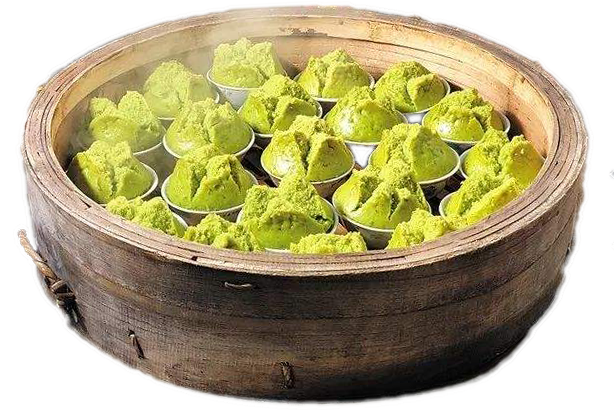

色香味形
形色似抹茶味蛋糕，口感松软，味道甘甜，有一股诱人的朴枳树叶浓香
营养价值
清明时节，气候转暖，雨水较多，阴湿的环境容易使食物变质，是肠道疾病多发季节。而朴籽叶恰好有消痰下气、排解积热，去除疾病的功效，在这个季节吃朴籽粿是合适不过了。
吃法介绍
模具先涂点油，好脱模。（模具一般有桃模型和梅花模型）把面糊入模，静置10分钟，大火蒸20分钟即可。
寻味地址
牌坊街朴籽粿：湘桥区牌坊街大石狮巷
上西平朴籽粿：导航“蓝梦美发”在附近
 

形色似抹茶味蛋糕，口感松软，味道甘甜，有一股诱人的朴枳树叶浓香
清明时节，气候转暖，雨水较多，阴湿的环境容易使食物变质，是肠道疾病多发季节。而朴籽叶恰好有消痰下气、排解积热，去除疾病的功效，在这个季节吃朴籽粿是合适不过了。
模具先涂点油，好脱模。（模具一般有桃模型和梅花模型）把面糊入模，静置10分钟，大火蒸20分钟即可。
牌坊街朴籽粿：湘桥区牌坊街大石狮巷
上西平朴籽粿：导航“蓝梦美发”在附近
桑葚粿